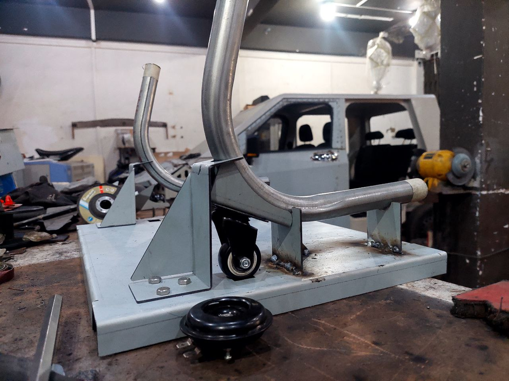
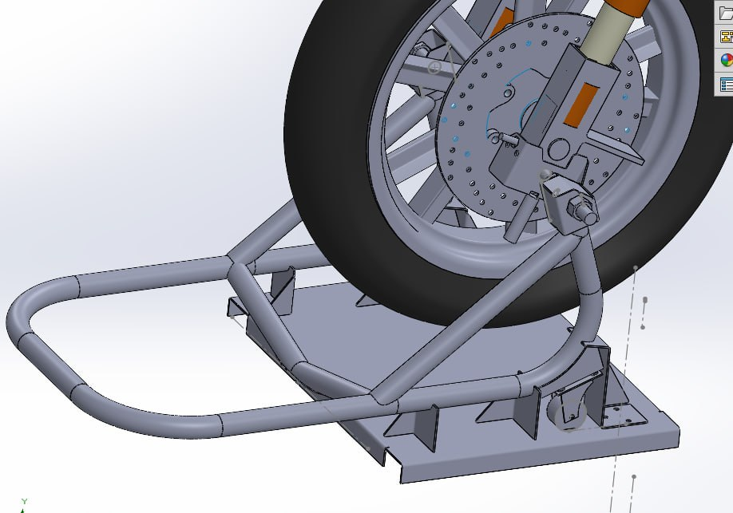
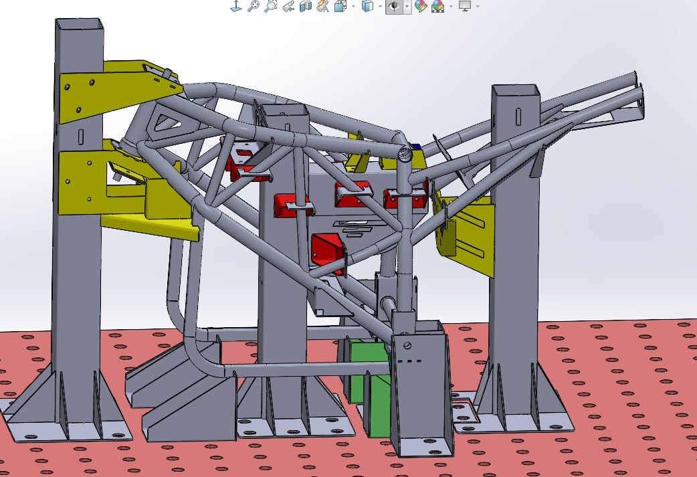
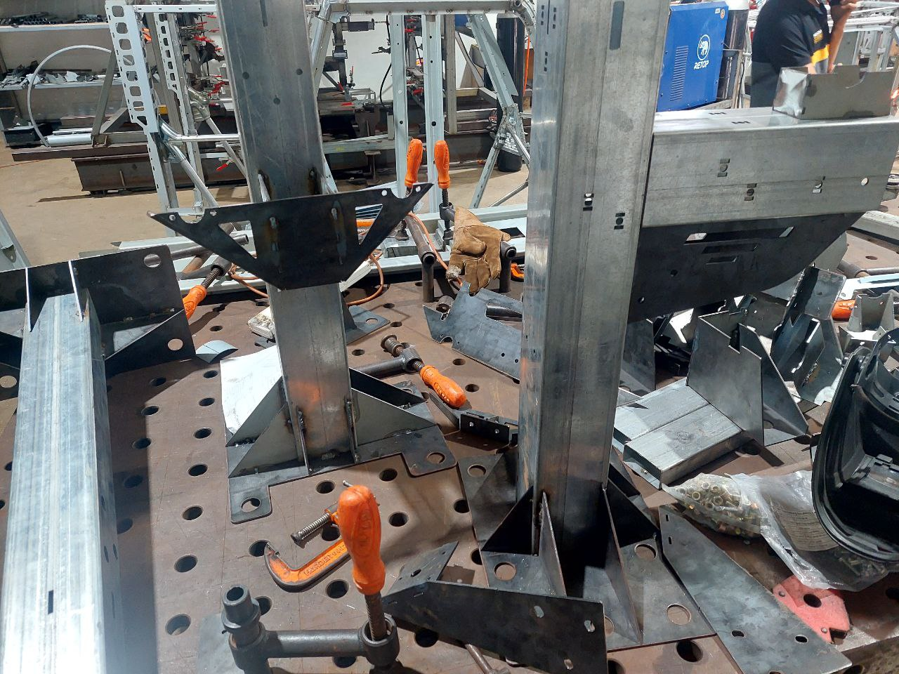
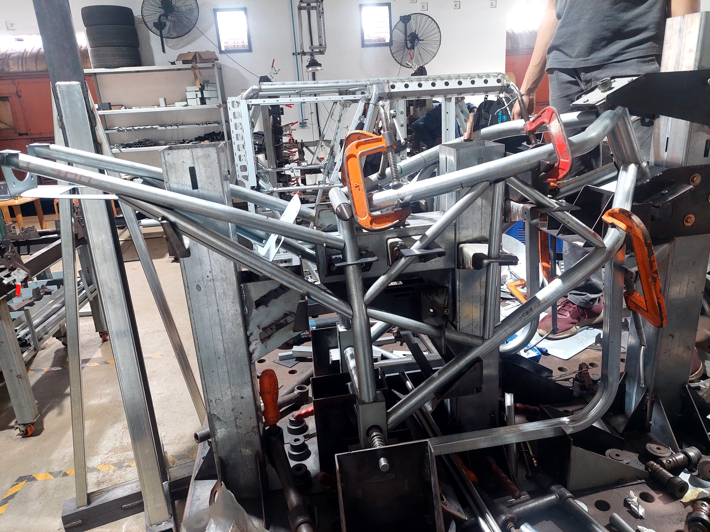
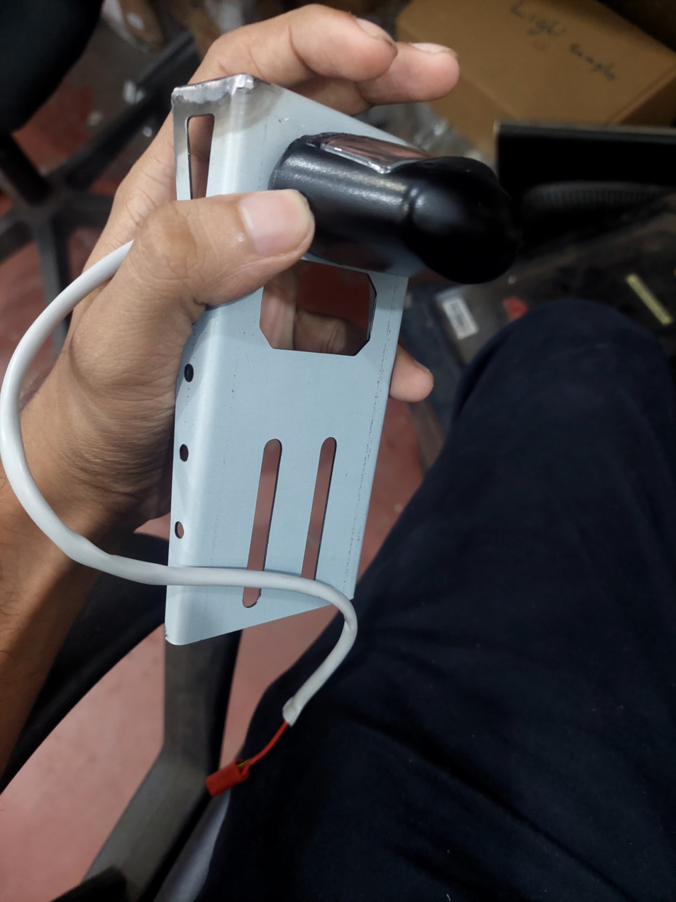
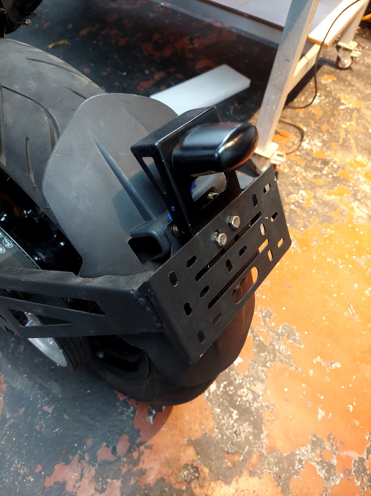

CAD Projects
SolidWorks, CATIA, FEA — turning ideas into engineered reality




Rear Paddock Stand — Vega Street Bike
Designed and developed a rear paddock stand to support the Vega Street Bike during maintenance. The stand safely elevates the rear wheel while maintaining structural rigidity. Design included concept development, 3D CAD modelling, and FEA stress validation using SolidWorks Simulation. The fabricated stand was tested with the motorcycle to verify stability and compatibility.
- Full SolidWorks 3D CAD model
- FEA stress and deformation analysis
- Physical fabrication and on-bike testing




Reusable Welding Jig — Vega Chassis
Designed and developed a reusable welding jig for accurate assembly of the Vega Street Bike chassis during fabrication. The jig ensures precise alignment and positioning of chassis members while welding, minimizing dimensional errors and improving repeatability. The structure provides sufficient rigidity while allowing easy placement and removal of chassis components.
- Improved chassis dimensional accuracy
- Reduced fabrication time significantly
- Reusable, modular jig design



LED Bulb Mount — Vega Street Bike
Designed a custom LED bulb mount for the Vega Street Bike to ensure secure and vibration-resistant fitment. The design was modelled in SolidWorks with attention to mounting geometry, thermal clearances, and ease of assembly. The component integrates seamlessly with the existing bike frame.
- SolidWorks 3D component model
- Vibration-resistant mount geometry
- Frame-compatible fitment design